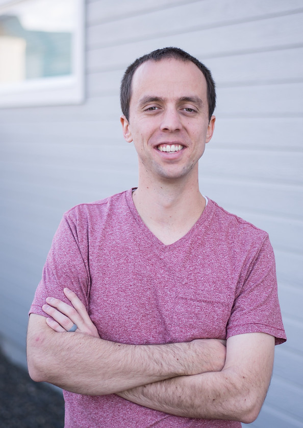

Software-engineer-turned-animator using Blender to make complex things make sense.
My name is Jared and I'm an animator from the United States. I have a Bachelor's degree in Computer Science, and I worked as a software engineer for about five years. Initially, 3D animation was a hobby for me, but I became increasingly obsessed with it. Thanks to YouTube, I have been able to turn this into a full time job.
I use a program called Blender to create 3D animations that explain how things work. I still get to use my programming skills to help me with animating.
I love learning how things work, and the videos you see on my YouTube channel are the topics that I find really fascinating! I specialize in animating objects, buildings, vehicles, and space exploration. I have a long list of ideas for future videos and I hope to keep creating for years to come.
When I'm not animating, I enjoy traveling, biking, reading, crocheting, learning, and spending time with my wife and kids.

Press, interviews, and conference talks featuring the channel.